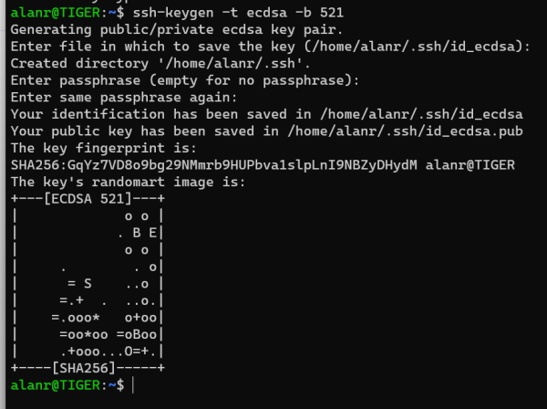
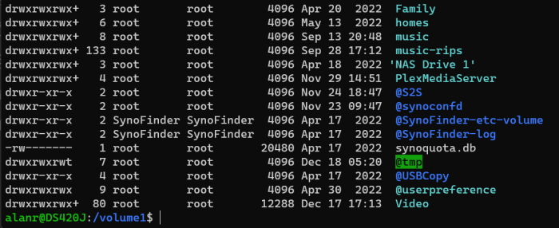

Installing the default Linux (Ubuntu).
wsl --install
List online versions of Linux.
wsl --list --online
List your Linux installations.
wsl --list
Returns.
Windows Subsystem for Linux Distributions:
Ubuntu-20.04 (Default)
docker-desktop
docker-desktop-data
Installing a version of Linux.
wsl --install -d <Distribution name>
e.g.
wsl --install -d kali-linux
Once you install this it will ask you for a username and password for this version of Linux.
wsl --unregister Ubuntu-20.04
Note: this will remove everything including your preferences.
Check the status of your WSL installation.
wsl --status
Returns.
Default Distribution: Ubuntu-20.04
Default Version: 2
Shows that I am running WSL 2.
The version of Ubuntu I am running can be found with.
lsb_release -a
Returns.
No LSB modules are available.
Distributor ID: Ubuntu
Description: Ubuntu 20.04.3 LTS
Release: 20.04
Codename: focal
wsl --help
Updates are released quicker than Microsoft can do their package updates. To do updates you can use the Linux distributions process.
sudo apt update && sudo apt upgrade
The system keys are kept in and these should be all you need.
/etc/ssh
Use a ECDSA key with a size of 521 bytes.
ssh-keygen -t ecdsa -b 521
This allows you to use the SSH keys to log into Linux or Unix systems.
You have to enable SSH on your NAS.
Now, generate a key.
ssh-keygen -t ecdsa -b 521

Now run the following to see your key.
ll .ssh
total 16
drwx------ 2 alanr alanr 4096 Dec 18 14:46 ./
drwxr-xr-x 25 alanr alanr 4096 Dec 18 14:46 ../
-rw------- 1 alanr alanr 736 Dec 18 14:46 id_ecdsa
-rw-r--r-- 1 alanr alanr 265 Dec 18 14:46 id_ecdsa.pub
I can copy the SSH key to the server.
ssh-copy-id 192.168.1.3
This asks for a password on the NAS. Once you do this it will copy the SSH key to the NAS.
Now you can log in without using a password.
ssh 192.168.1.3
Screenshot.

Docker is integrated into WSL 2.
You can run Docker from inside your WSL instances.
We are running Linux images.
In Docker General settings check the Use the WSL 2 based engine setting.
In Resources settings.

In Powershell I can update my default Linux instance with.
wsl sudo apt update -y
And.
wsl sudo apt upgrade -y
All you need to do to run a linux command is add the wsl at the front of the command.
I can edit my Ubuntu .bashrc from Powershell.
wsl nano ~/.bashrc
Note: if you have multiple instances of Linux running you can change the instance by using the name.
wsl -d Ubuntu-20.04 cat ~/.bashrc
This will list the .bashrc file on Ubuntu.
I can use Linux commands on Windows folders using the default instance of Ubuntu.
wsl grep -in "Dylan" *.txt
Uses the Linux version of grep to find text files with the word Dylan in them.
You can use Windows commands directly in WSL Linux.
dir
Will run in your Ubuntu instance.
In Powershell run this Linux command to create a Windows text file.
wsl vim test.txt
View the file.
wsl cat test.txt
Returns the text file contents.
PS C:\Temp\a> cat test.txt
This is a new windows text file created using VIM.
Files in your Linux system are accessible in Windows.
The files in your Windows system are accessible in Linux.
Note: you get better performance from your native file system.
Keep your Windows files in Windows and Linux files in Linux.
You can access the Linux file system from Powershell.
dir \\wsl$\Ubuntu-20.04
or
dir \\wsl.localhost\Ubuntu-20.04
Will list the files in Ubuntu.
You can access any Linux file system using \\wsl$\.
Applications that running use their native file system.
In Linux you can access the Windows file system using the following format.
ls /mnt/c/Git/Notes/
Will list c:\Git\Notes directory.
File permissions will stay the same in Windows or Linux. For example, a read-only file will be read-only in Windows and Linux.
You can change a Linux user for commands.
wsl -u root ls -l
Will list the contents of the current Windows directory using a Linux command as root user.
Note: to do this you need to use Powershell in Administrator mode.
You can use WSL to mount an internal Linux disk inside a WSL Linux distribution.
This is useful for disks that aren't normally supported by Windows.
When the disk is mounted through WSL, all the instances of Linux will have access to it.
Once you have added a device you need to find its DeviceID.
If you have multiple partitions, which one do you need to mount?
In Powershell
Get-CimInstance -query "SELECT * from Win32_DiskDrive"
Or.
wcim diskdrive list brief
Both return.
DeviceID Caption Partitions Size Model
\.\PHYSICALDRIVE1 WDC WD80EFAX-68KNBN0 1 8001560609280 WDC WD80EFAX-68KNBN0
\.\PHYSICALDRIVE0 WDC WD60EFRX-68MYMN1 3 6001172513280 WDC WD60EFRX-68MYMN1
\.\PHYSICALDRIVE3 TOSHIBA TOSHIBA USB DRV USB Device 3 16031070720 TOSHIBA TOSHIBA USB DRV USB Device
\.\PHYSICALDRIVE2 NVMe Samsung SSD 970 4 1000202273280 NVMe Samsung SSD 970
From this we can see that the device we inserted into a USB drive has a DeviceID of.
\.\PHYSICALDRIVE3
The wsl --mount option is used.
We can mount our USB drive with the command.
wsl --mount \\.\PHYSICALDRIVE3
It assumes the drive is ext4 format.
You can specify the partition to mount.
wsl --mount \\.\PHYSICALDRIVE3 --partiton 3 --type ext4
Once mounted Linux has access.
In Linux the disck is available under the /mnt/wsl mount point.
For our example it would be.
wsl /mnt/PHYSICALDRIVE3
Note that Windows also has access to this drive.
In our previous example we could access it with.
\\wsl$\Ubuntu-20.04\mnt\wsl\PHYSICALDRIVE3
wsl --unmount \\.\PHYSICALDRIVE3
Note: the mount command didn't work for me. I think this is because my Linux USB drive isn't ext4 format.
Checkout the Microsoft WSL issues page.
Open a Powershell Administrator shell and run this command.
wsl --update
You don't have to close the Ubuntu terminal when you do changes to the .bashrc file. Just run this command.
source .bashrc
This will reload .bashrc without having to reboot the terminal.